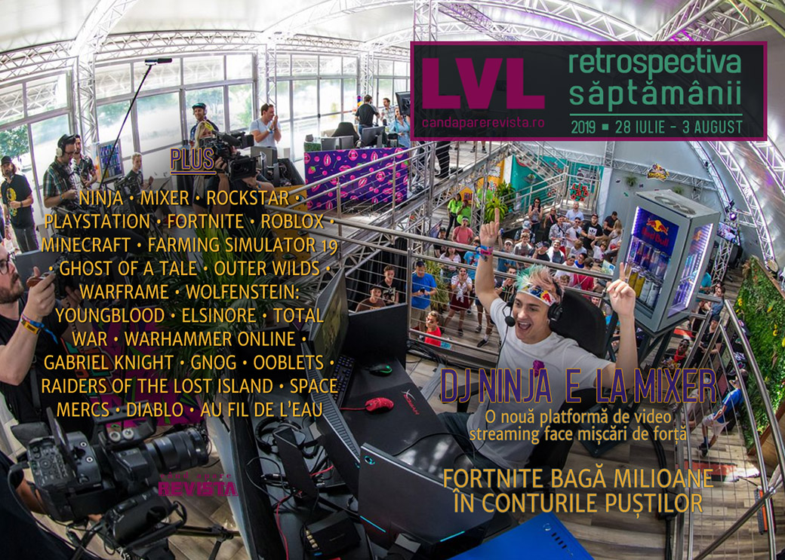

Retrospectiva săptămânii 28 iulie - 3 august
Streamer-ul Ninja face (și mai mulți) bani și aduce profit și pentru Microsoft, site-ul E3 face publice datele personale ale jurnaliștilor, turneul Fortnite aduce multe premii și îmbogățește adolescenții, iar Rockstar reușește să nu plătească impozite pe profit în Marea Britanie în ultimul deceniu. Și săptămână plină pentru jocurile indie românești: s-au lansat Raiders Of The Lost Island și Space Mercs.
Linkuri rapide:
- Știri
- Articole (critică, dev, design)
- Made în România
- Anunţuri şi lansări de jocuri
- Prăvălii de jocuri

Știri
- Streamer-ul Ninja, pe numele real Tyler Blevins, ține capul de afiș pentru știrile de săptămâna aceasta anunțând că renunță la a mai transmite pe Twitch în favoarea exclusivă a platformei Mixer, deținută de Microsoft. (Ars Technica, Polygon, Kotaku, VideoGamesChronicle, Eurogamer), mișcare care s-a dovedit benefică atât pentru numărul de download-uri al aplicației, cât și pentru publicul lui Ninja, care și-a dublat maximul de spectatori din ultima perioadă. (VideoGamesChronicle, Variety, VentureBeat)
- O vulnerabilitate a site-ului E3 a expus datele personale ale peste 2000 de participanți (presă, streaming, investitori) la ediția din 2019. (VideoGamesChronicle, VentureBeat, Kotaku, Games Informer, GameDaily.biz, GamesIndustry.biz)
- Și tot Ninja publică o carte despre… ce altceva!?, gaming și streaming. (Games Informer, PC Gamer)
- O organizație non-profit din Marea Britanie publică un raport în care arată cum Rockstar North, deși a creat cel mai profitabil produs de entertainment din istorie - Grand Theft Auto V - nu a plătit impozite pe profit în Marea Britanie în ultimii 10 ani, ba mai mult, chiar a beneficiat de fonduri guvernamentale în valoare de 42 milioane de lire dintr-un program dedicat stimulării industriei de jocuri. (The Guardian, GamesIndustry.biz, PCGamesN, Gamasutra)
- PlayStation 4 a depășit pragul de 100 de milioane de unități vândute. (Kotaku, Games Informer, Eurogamer)
- A avut loc turneul final al Fortnite World Cup (PC Gamer), cu premii totale în valoare de 40 milioane de dolari (PC Gamer, iar câștigătorul concursului la simplu, în vârstă de 16 ani, a primit un premiu de 3 milioane de dolari. (GamesIndustry.biz, Quartz)
- Roblox a trecut de pragul de 100 milioane de jucători activi lunar, depășind chiar și Minecraft, care are „doar” 91 milioane. (The Verge)
- CBS va realiza un documentar și un serial TV despre rivalitatea dintre Super Nintendo și SEGA Genesis de la începutul anilor 90. (Ars Technica)
Articole (critică, dev, design)
- Why the gaming world will be worse once GameStop is gone (Ars Technica)
- Real people starring in porn games is a surreal new frontier (PC Gamer)
- Dying once in a videogame changed this streamer’s life forever (PC Gamer)
- How a Group of Gamers Tracked Down a Quadruple Murder Suspect (Vice)
- The Impact of Fandom on Game Criticism (Gamasutra)
- 'Hotline Miami' Showed the Futility of Ultra-Violence as Critique (Vice)
- Shared Mental Models Win Games (The Psychology of Video Games)
- Can Marvel Crossovers Ever Escape the Infinity Saga? (Gizmodo)
- Is the Marvel Cinematic Universe to blame for lack of imagination in its video games? (VG247)
- How Over 25 People Got Scammed Into Working At A Nonexistent Game Company (Kotaku)
Actualitate
- Putting the PS4’s 100 million sales in context (Ars Technica)
- Fortnite World Cup: the $30m tournament shows esports’ future is already here (The Guardian)
- A 90s Kid at QuakeCon Europe 2019 (Kotaku)
Not-a-review
- Competitive Farming Simulator Is Like An Adorable Tortoise Race (Kotaku) plus Farming Simulator 19 competition brings big drama to wheat harvesting (PC Gamer)
- Ghost of a Tale: Little big adventure (I Need Diverse Games)
- The Joy of Feldspar in Outer Wilds (RPS)
- Why Dota Underlords is a good board game (RPS)
- Dang, Warframe really picks up after the first 20 hours (Polygon)
- (spoilers) Wolfenstein: Youngblood’s story of sisters is a missed opportunity (Polygon)
- Elsinore (Golden Glitch) (Emily Short Blog)
- A Game Where You Try To Prevent A Shakespearean Murder In Real Time (Kotaku)
Industrie
- What it’s like to get laid off in the games industry (PC Gamer)
- Total War: Three Kingdoms lead designer talks about the perfect Total War setting (PC Gamer)
- “They were going to make the sequel without Jensen” - inside Deus Ex with actor Elias Toufexis (VG247)
- Game credits are still a broken mess that hurt the industry (VideoGamesChronicle)
- From child gambling to women in Ultimate Team, EA Sports refuses to budge (Eurogamer)
- Minecraft is having a big comeback in 2019 (Polygon)
- Satoru Iwata’s dreams for Nintendo finally came true (Polygon)
- The Journey Ahead: Sky is Jenova Chen’s Newest Attempt to Evolve The Medium of Games (GameDaily.biz)
- Jon Blow: "The job isn’t to be in a community; the job is to make a good game" (GamesIndustry.biz)
- Making the most interesting licensed games through self-sabotage (GamesIndustry.biz)
Istorie, retrospectivă
- The untimely death of Warhammer Online, and the long road to resurrect it (PC Gamer)
- The Art of Pirated Software (Gizmodo)
- Gabriel Knight: Sins of the Fathers (The Digital Antiquarian)
- Remembering CGA graphics (Custom PC magazine)
Dev, making of, mecanici
- The art of creating the perfect first game trailer (PC Gamer)
- Learn, reset, repeat: The intricacy of time loop games (GamesIndustry.biz)
- Live, Die, Repeat — How Time Loops Took Over Video Games (Medium)
- Watch two of Elsinore’s devs discuss the tragic Shakespeare simulator (Gamasutra)
- Building the monstrous transforming puzzle heads of GNOG (Gamasutra)
Design, world-building, artă
- Creating terrifying, memorable 2D monsters (Gamasutra)
- Transform And Roll Out, Comrade (Kotaku)
- Cyberpunk Skylines (Kotaku)
Made în România
- Două studiouri românești au avut lansări săptămâna aceasta pe Steam: Last Tales a lansat Raiders Of The Lost Island (multiplayer cooperativ-competitiv) în early access (Steam), iar Bearded Giant Games a lansat Space Mercs (space shooter). (Steam)
Anunțuri și lansări de jocuri
Anunţate
- Garfield Kart: Furious Racing (Kotaku)
- Monument Valley 3 (The Verge)
- Cthulhu Saves Christmas (Destructoid)
- Landlord’s Super (Eurogamer)
- The Oriental Exorcist, un action platformer cu tematică chinezească (GameSpace)
- Eliza, următorul joc de la Zachtronics (PC Gamer)
Acum cu dată de lansare
- Minoria: 27 august (VideoGamesChronicle)
- Devil’s Hunt: 17 septembrie (DSOGaming )
- Tracks – The Train Set Game (iese din early access): 20 septembrie (RPS)
- The Sojourn: 20 septembrie (PC Gamer)
- Ghostbusters: The Video Game Remastered: 4 octombrie (DSOGaming )
- Concrete Genie: 8 octombrie (Destructoid)
Amânate
- The Good Life: primăvara 2020 în loc de 2019 (Destructoid)
- Phoenix Point: decembrie în loc de septembrie 2019 (Games Informer)
- Travis Strikes Again: No More Heroes iese pe PC și PS4 pe 17 octombrie (Games Informer)
- Monster Hunter World: Iceborne apare pe PC în ianuarie 2020, nu pe 6 septembrie ca versiunea de console (GameSpace)
Anulate
- Mavericks: Proving Grounds (RPS)
Lansate
- 30 iulie: A Short Hike (Steam)
- 30 iulie: Mutant Year Zero: Seed of Evil (Steam)
- 30 iulie: The Blackout Club (iese din early access) (Steam)
- 30 iulie: Morphies Law: Remorphed (Steam)
- 30 iulie: Oxygen Not Included (iese din early access) (Steam)
- 30 iulie: Warhammer 40,000: Inquisitor—Prophecy (Steam)
- 30 iulie: Raiders of the North Sea (Steam)
- 1 august: We Need To Go Deeper (iese din early access) (Steam)
- 1 august: Hamsterdam (Steam)
- 1 august: Collapsed (Steam, gog.com)
- 1 august: Raiders Of The Lost Island (early access) (Steam)
- 2 august: The Church in the Darkness (Steam, gog.com)
- 2 august: Dry Drowning (Steam, gog.com)
- 2 august: Wreckin’ Ball Adventure (Steam)
- 2 august: Space Mercs (Steam)
Prăvălii de jocuri
Știri
- Ooblets is the next Epic Games Store exclusive, "Epic offered us a minimum guarantee on sales (DSOGaming )
- Over 10,000 games have been added to wishlists on Steam from the Interactive Recommender (PCGamesInsider.biz)
Articole
Jocuri noi în catalog
- Gear of War 4, Forza 6 lead strong August for Xbox Games With Gold (Eurogamer)
- Xbox Game Pass adds Slay the Spire, Downwell, Jackbox, and more in August (Polygon)
- PS Plus August free games include Wipeout, Sniper Elite 4 (Shacknews)
Jocuri gratis și free weekends
- Au Fil De L’eau is a striking picture-book excursion, and free (RPS)
- Play Street Fighter 5 free on PS4 and PC next week (Shacknews)
- The original Diablo is now playable in shareware form (remember that concept?) in your browser (Destructoid)
- Alan Wake and For Honor are now available for free on Epic Games Store (DSOGaming )
Reduceri și promoții
- Crusader Kings 2 and all the expansions are really cheap in the new Humble Bundle (PC Gamer)
- Get Slay the Spire and Squad in the September Humble Monthly bundle (Eurogamer)
Retrospectiva săptămânii este rubrica duminicală în care trecem în revistă evenimentele săptămânii de pe frontul de gaming: știri şi articole (scrise de alții, bineînțeles, că e mai ușor aşa), industrie, lansări, oferte de jocuri, toate numai de savurat la cafeaua de duminică dimineața.
De asemenea, rubrica e deschisă oricui vrea și poate contribui. Dacă ai citit vreun articol sau vreo știre interesantă și crezi că merită incluse în retrospectiva săptămânii, te așteptăm pe forum pe unul dintre topicurile dedicate: Știri, Articole, Gaming România].